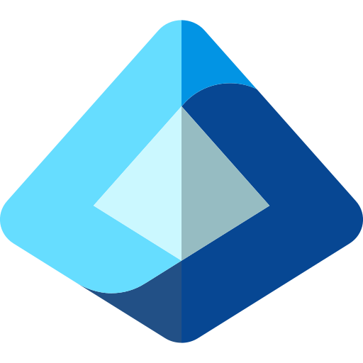
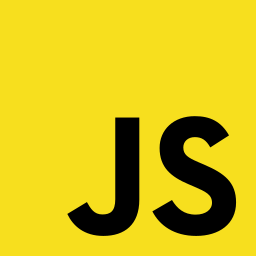
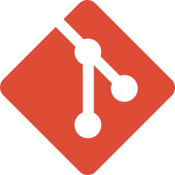
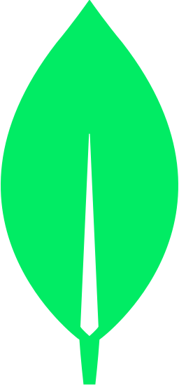

Selected projects
All projectsLoading selected projects…
Information Security Engineer · Cincinnati, Ohio
I work across information security, software engineering, and DevOps infrastructure—building practical systems, security tooling, and technical products.
Loading selected projects…
— NowCurrent
Northern Kentucky University
Build infrastructure, coordinate technical projects, and support information security operations.
2022 — May 2026
Northern Kentucky University
Progressed from end-user support into production server, network, and software work.
2023
DeanHouston
Worked on cloud-hosted web systems, automated updates, and operational monitoring.
2021 — Now
NKCyber Club
Lead and mentor security-focused project work, turning ideas into useful tools and learning experiences.
2023 — Now
Army National Guard
Maintain public-safe defensive cyber readiness through structured technical training.
2023 — 2026
U.S. Army
Developed practical leadership, planning, and team coordination under pressure.
Class of 2026
Northern Kentucky University
Applied Software Engineering, Cyber Security, and Computer Information Technology; Computer Science minor.

Microsoft Entra ID
JavaScript
Git
MongoDB